Bạn dặn: "các dạng D E F mặt vẫn bị giống con gốc, bạn đổi dạng mặt nó đi". Bỏ hẳn mặt nạ mỏ nhọn + hai nhánh sừng cao + hai móc sừng. Ba kiểu đầu mới vẽ trên nền bản D (áo cháy thành lửa); đầu là mảnh cứng trên một xương nên ghép được với dáng áo D, E hay F đều được.
Mũ trùm than viền vàng, chóp nhọn ngả về sau; trong mũ tối đen chỉ có hai mắt lửa xếch; ngọc vàng trên trán; không sừng.
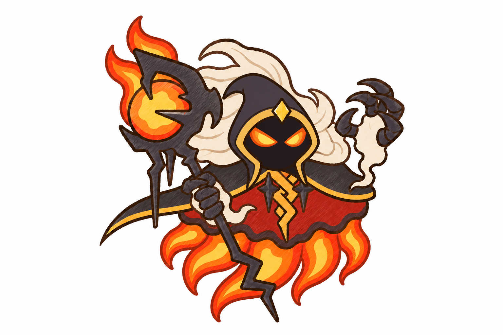
Mặt nạ than hình khiên, mày cau, hai mắt lửa, cằm nhọn; hai sừng cừu to cuộn xoắn màu tro kem hai bên.
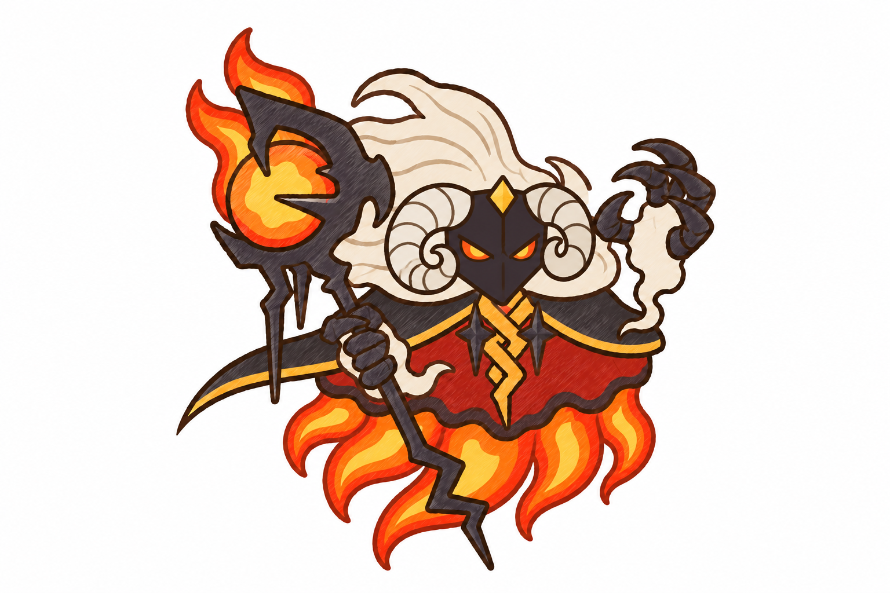
Mặt nạ trái xoan tro kem, hai hốc mắt lửa có vệt mực dưới mắt; trên trán mào trăng khuyết lớn than viền vàng.
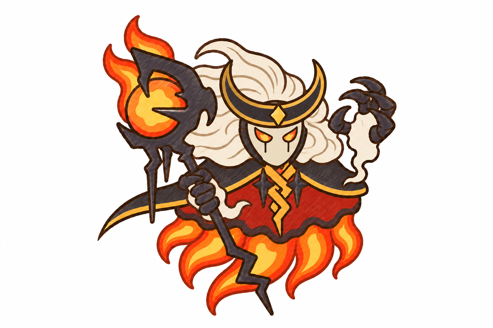
Bạn dặn: "nhìn concept đầu, áo choàng bị giống con gốc quá". Giữ nguyên mọi thứ của bản A lượt 1 (trượng + cầu lửa, tóc, mặt nạ, hai bàn tay, dây ngực), chỉ vẽ lại áo thân và khăn vai theo ba dáng khác hẳn con gốc. Màu (áo đỏ / tóc lửa / khói + đồng ở lượt 1 bên dưới) vẫn đổi được trên dáng áo bạn chọn.
Nửa trên là áo vải đỏ thẫm mép cháy sém, nửa dưới thân là khối lưỡi lửa; khăn vai thành áo vai ngắn, bên trái kéo một đuôi nhọn dài.
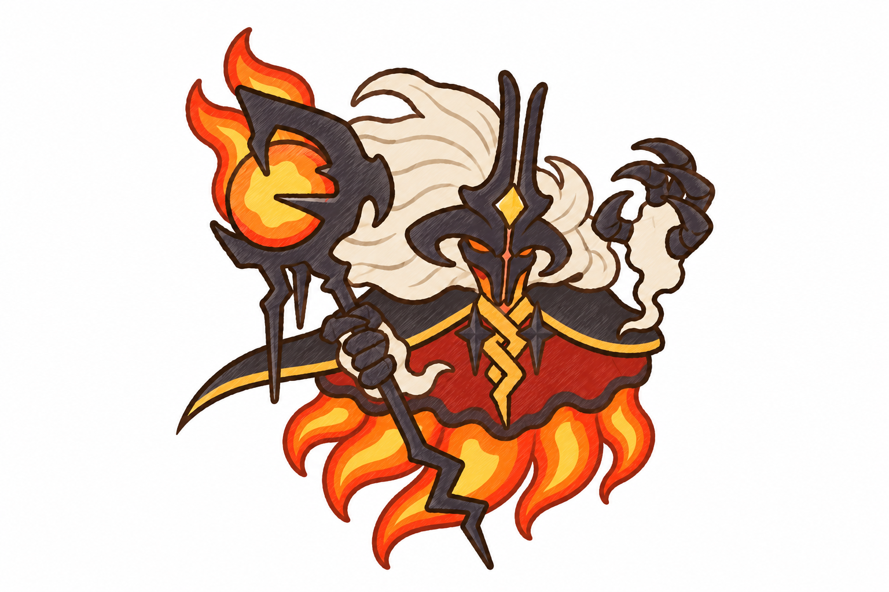
Áo dài loe hình chuông, gấu lượn sóng tròn có dải lửa bốc từ gấu lên; khăn vai thành khăn quàng dài đuôi én.
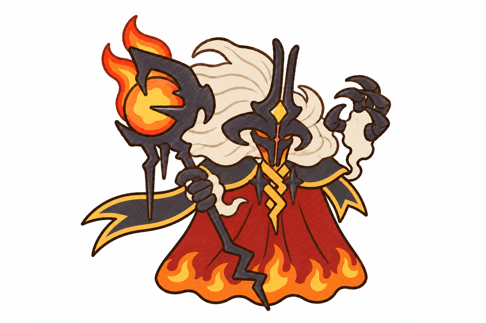
Ba tầng vạt hình lông vũ chồng nhau: đỏ thẫm, đỏ, cam ngọn vàng; khăn vai cắt vạt lông vũ.
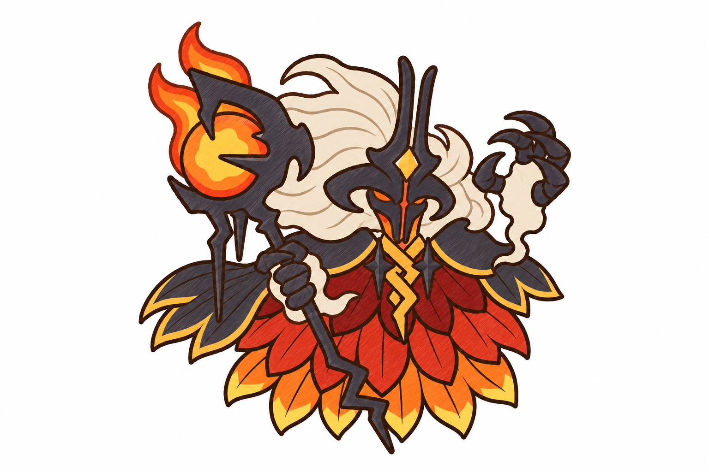
Áo đỏ thẫm hoa văn lưỡi lửa cam, tóc và cổ tay tro trắng kem, mặt nạ / sừng / trượng / vuốt đen than, khăn vai than viền vàng.
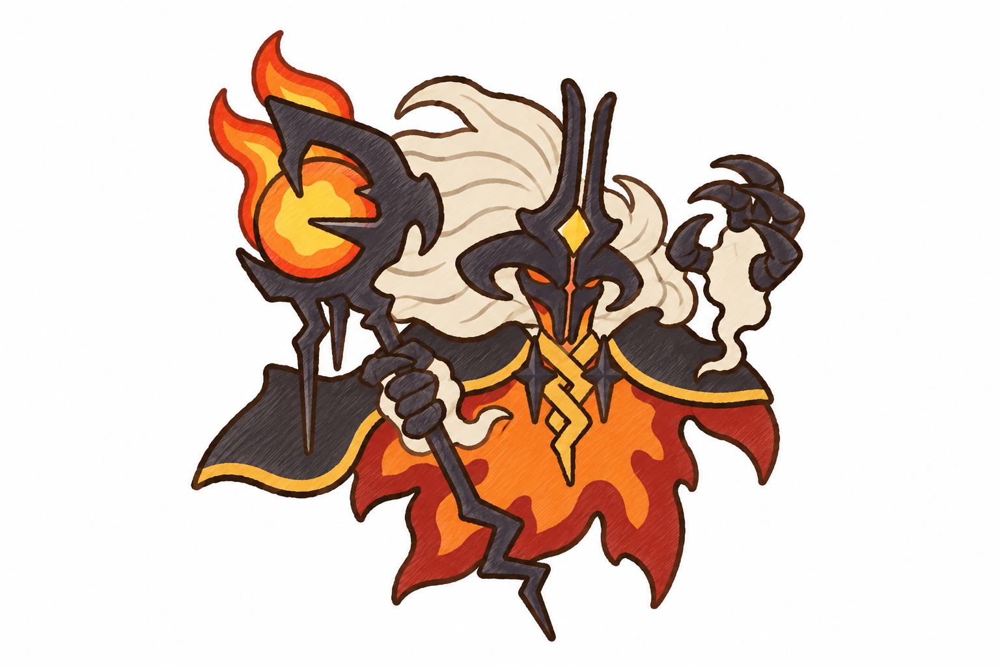
Tóc là bờm lửa, hai cổ tay là đốm lửa; áo xám than hoa văn than hồng, khăn vai đỏ thẫm, giáp sắt đen.
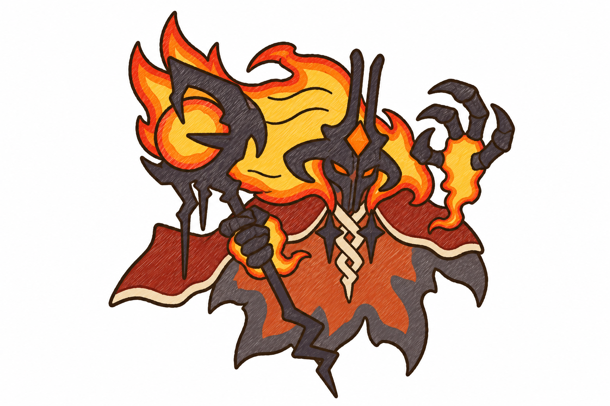
Tóc khói xám than, cổ tay khói; áo cam hổ phách hoa văn vàng, khăn vai nâu đỏ; mặt nạ / sừng / trượng đồng thau.
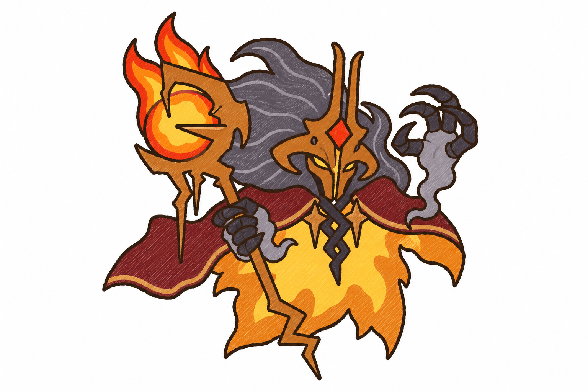
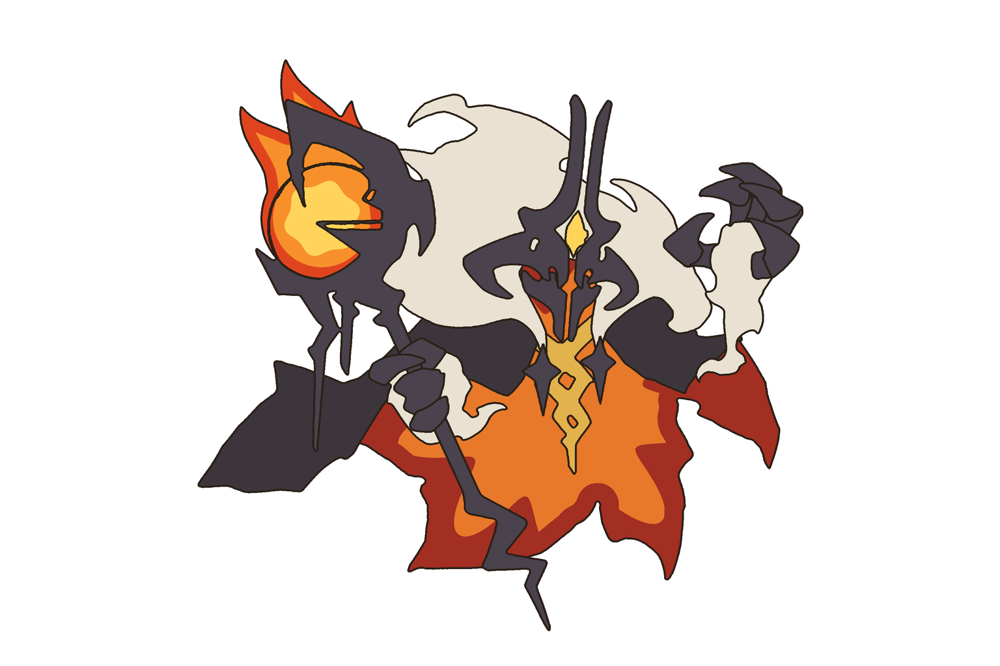
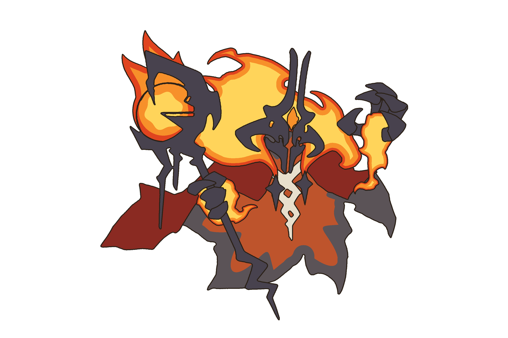
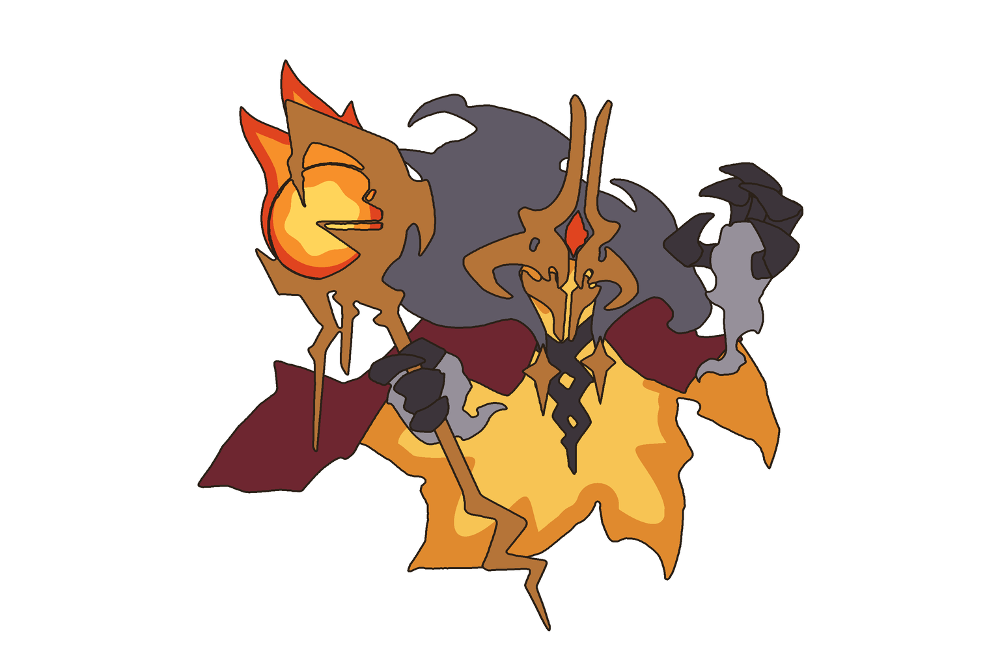